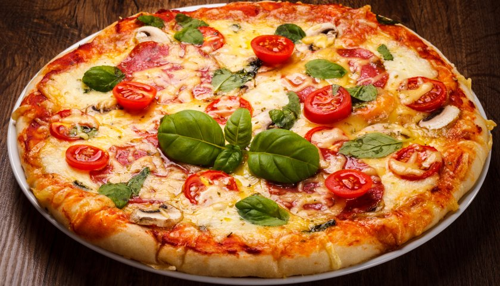

Even a novice cook can master the art of pizza with our simple step-by-step guide. Bellissimo!
Ingredients
- Mozzarella, sliced
- cherry tomatoes
- fresh basil
- grated parmesan
Directions
- Make the sauce: Mix the passata, basil and crushed garlic together, then season to taste. Leave to stand at room temperature while you get on with shaping the base.
- The dough needs to be very thin as it will rise in the oven. Lift the rounds onto two floured baking sheets.
- op and bake: heat the oven to 240C/220C fan/gas 8. Put another baking sheet or an upturned baking tray in the oven on the top shelf. Smooth sauce over bases with the back of a spoon.
Return to top
Return to main page